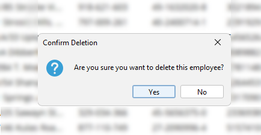

4. Technical Information
This section serves as a comprehensive resource that provides insights into the critical technical aspects of the payroll system. It includes detailed discussions on key technical aspects, such as the use case and class diagrams, and the testing documentation. The class diagram offers insights into the system's object-oriented design, illustrating the structure, behavior, and relationships of system objects.
4.1 Use Case Diagram
The use case diagram provides a visual representation of the system's functional requirements and user interactions, aiding in requirements analysis, system design, and development efforts.

Figure 1. Use Case Diagram of Proposed MotorPH Payroll System
The MotorPH Payroll System is a crucial component of the organization's administrative infrastructure, designed to manage and process employee compensation efficiently. Its primary objective is to accurately calculate employee salaries, deductions, and benefits in accordance with company policies and regulatory requirements. By automating payroll processes, the system aims to streamline payroll administration, reduce errors, and ensure timely and compliant disbursement of employee wages. Additionally, the Payroll System serves as a centralized repository for employee payroll data, facilitating reporting, analysis, and decision-making by stakeholders within the organization.
4.2 Class Diagram
The class diagram offers insights into the system's object-oriented design, illustrating the structure, behavior, and relationships of system objects

Figure 2. Class Diagram of Proposed MotorPH Payroll System
The MotorPH Payroll System is a crucial component of the organization's administrative infrastructure, designed to manage and process employee compensation efficiently. Its primary objective is to accurately calculate employee salaries, deductions, and benefits in accordance with company policies and regulatory requirements. By automating payroll processes, the system aims to streamline payroll administration, reduce errors, and ensure timely and compliant disbursement of employee wages. Additionally, the Payroll System serves as a centralized repository for employee payroll data, facilitating reporting, analysis, and decision-making by stakeholders within the organization.
4.3Testing
Testing is paramount to ensuring the quality, reliability, and correctness of the payroll system. This subsection explores the testing methodologies, strategies, and techniques employed to validate the system's functionality, performance, and security.
Usability testing was conducted to ensure that the payroll system is intuitive, user-friendly, and meets the needs of its intended users. This section provides an overview of the usability testing process, methodologies employed, key findings, and actions taken to enhance the system's usability.
4.3.1 Testing Approach
Usability testing was performed using a combination of observation, task-based scenarios, and user feedback sessions. The testing approach aimed to assess the following aspects:
- Navigation: Ease of navigating through different sections and features of the Payroll System.
- Data Input: Clarity and efficiency of data entry processes, including employee information, salary details, and deductions.
- Report Generation: Accessibility and comprehensibility of generated reports, such as payroll summaries.
- Error Handling: Effectiveness of error messages and prompts in guiding users to resolve issues.
- Overall User Experience: Subjective feedback on the overall usability, aesthetics, and intuitiveness of the system interface.
4.3.2 Testing Sessions
Usability testing sessions were conducted in a controlled environment, with facilitators guiding participants through predefined tasks and scenarios. Participants were encouraged to think aloud while interacting with the system, allowing observers to capture insights into their thought processes and user experiences.
4.3.3 Key Findings
The usability testing sessions yielded valuable insights into areas of strength and areas for improvement within the Payroll System. Key findings included:
- Intuitive Navigation: Users appreciated the clear organization of menu options and the ability to easily switch between different system functions.
- User Interface: Users expressed a desire for UI enhancements aimed at achieving a more enterprise-grade appearance for the application, specifically highlighting the importance of aligning the visual design with industry standards and expectations for professional software solutions.
- Error Guidance: Participants requested additional prompts for crucial tasks that directly modify the employee data.
4.3.3 Key Findings
Based on the findings from usability testing, the following actions were taken to enhance the usability of the payroll system:
- Revamped the user interface to reflect a more modern and professional appearance, aligning with enterprise-grade standards. This included updating visual elements such as icons, typography, and color schemes to create a cohesive and polished look.
- Added additional contextual prompts for crucial tasks that directly modify employee data. These prompts provide clear guidance and instructions to users, helping them avoid potential errors and ensuring data accuracy.
Figure 3. Overtime Request Confirmation Dialog System

Figure 4. Deletion Confirmation Dialog
Usability testing played a crucial role in identifying usability strengths and areas for improvement within the payroll system. By incorporating user feedback and implementing iterative design enhancements, the system aims to provide an optimal user experience for stakeholders.